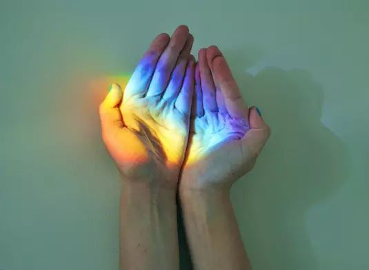
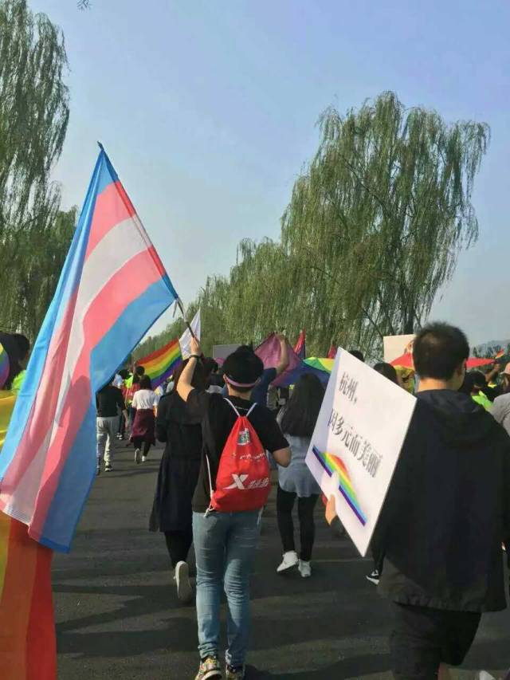

彩虹马拉松 | 我有话想讲


2016.11.6
又是一年一度的杭州马拉松
也是杭州欢乐的ji佬们开心的时候
酷儿论坛的志愿者们也参加了彩虹马拉松
让我们一起来听一听他们的感受吧！

FROM 山姆 | 友同直人 | 大一学生
活动开始前，我无意间跟葡萄聊起彩虹旗，“可是到底只有六种颜色啊？”葡萄告诉我，在最开始选定以彩虹为标志而印制成旗帜的时候，其中一种颜色印刷费用太高，只好放弃它选了六色。“这个理由好心酸啊。”她笑着这样说。
即使缺乏大众关注、财力物力不那么充足，六色的彩虹也要为自己发声。
在马拉松沿途我问了很多路人，他们的认知还停留在“性少数群体就是同性恋”的阶段。还记得高三的时候，我也是这样无知的吃瓜群众之一。偶然在一期杂志中看到了“跨性别者”的专题，才意识到有更多的性别认知需要我们去了解、理解。抱着“give voice to the voiceless”的心态，以及想要鼓动更多和曾经的我一样的人，我以校园志愿者的身份参与了活动全程。
有很多细节让我很感动——事无巨细地叮嘱大家的Ada，带着大家热身的暖阳，细心为每个人彩绘的LQ，从我们身旁路过说着“The LGBT team! 加油！”的外国美眉，一路陪跑的志愿者和我的浙大伙伴们，重复了一次又一次的口号，当然还有那面好多好多人用双手撑起来的彩虹旗。我在旗子下面窝了好几公里，心里想着，这是真正意义上的“举双手撑同志”阿hhh！
聚餐时，阿园问我见到这么多“活基佬”有什么想法。我说，没有什么特别的感受，就是开心。其实在刚集合的时候，我感觉自己的眼神还是难免地带有一种揣测，交谈也有点犹豫，心里还是难免在把性向的区别放大，再加上刻意回避“身份”的话题，我表现得很不自然，没有很好地融入。但是就这样小小的7公里，脑袋上顶着旗不顾形象地跑，和大家一起喊着号子，以至于到后来询问路人时脱口而出地居然是“咱们这个活动”，我真切地觉得，在彩虹跑时，我们是作为一个标签为“性少数”的支持者在向更多人介绍这个群体。但是，近距离接触时，我们之间是不需要刻意label的。放下猜测的目光，以平常心态对待每个个体，会轻松很多。
我那条“我直并支持”的朋友圈真的是我获得赞最多的了！我在以小小的力量支持着LGBT，也希望更多的人会因我的小小的影响一起发声。倘若旗帜鲜艳亮眼以致路人都停下拍照，性少数群体一定也能通过声音让更多人了解、理解、支持自己。缺了一色的彩虹尚有六色，我们生活的多元时代需要更多的声音。

翻看照片看到各位的笑脸，我诚挚地祝福大家勇敢做自己、勇敢发声。
直至有一天，当你们说出“我是性少数”的时候，不再被看成是勇敢，而是再平常不过的行为，就像说出一句“我喜欢吃番茄”一样。

FROM 媒体组 | 肯：
在奔跑与呐喊的间隙，我会偷偷跑到附近的人群当中偷听。一对中年夫妻中丈夫似乎向在妻子科普“美国去年就合法啦……”；倒水的志愿者一边忙活一边带着小心翼翼的兴奋和身旁呆呆的伙伴说：“诶呀彩虹旗就是那个嘛”；围观的老大爷们会直直地盯着声势浩大的队伍互相评论着“更朝的伢儿啊……”

无论是好是坏的评价，当人们热切地讨论起性少数的问题时，至少我们不再是隐形的，像我出柜时母亲惊讶的眼光和“从没听说过这回事”的评论想必也会更少一些了，而这于我而言就是彩虹马拉松的意义。

FROM 倡导组 | 李葡萄：
这是我第二次参加彩虹马拉松。去年的这个时候，葡萄才刚刚踏入同志公益圈，可想而知各种羞涩。不过一年后的今天，从头到尾，我能感觉到的是作为老司机的骄傲。
在起跑点，遇到了一个中文可流利的美国老太太。她看到我们的旗帜和服装主动上来搭话，我还在那儿费劲解释什么是性少数，结果老太太直接说了“em LGBT team，加油”。我和我的小伙伴顿时感觉整个世界都亮了。一路上，好多人为我们鼓掌为我们拍照，当然也有人嘲讽甚至很不友好。
西湖边上，大家跑过一旅行团，导游挥着小旗子，说：“这是杭州的栏杆。”我们也挥着彩虹旗，对他们笑：“我们是杭州的ji佬。”

最后以今天的口号作为结束吧
“家家都有性少数，社会需要宽容度”
“爱情无关性别，同性一样和谐”
“撑同志，反歧视”
“杭州因多元而美丽”